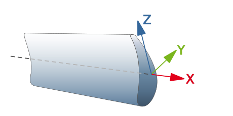

General basic settings – 5X cycles
X orientation of the frame
To machine turbine blades, milling machines are generally used whose X axis corresponds to the longitudinal axis of the blade around which the rotary movement occurs during machining. This frame orientation is therefore defined as the basis for the entire turbine blade package.
For all strategies - except point milling - the machining direction is specified based on the direction of the X axis of the frame (X+ / X-).
The local tool coordinate system must be created so that the X axis runs along the main rotary axis.
|  |
The orientation of the Z axis defines the position of the tool for approaching and retracting as well as the direction of the retraction plane. To avoid machining marks, the Z-axis must be oriented such that the tool approach takes place in the area of the trailing or leading edge of the turbine blade.
"Rolling Ball" function
This function can be enabled under the name Contact mode for swarf cutting and under Point milling for milling. It is to be used primarily if
-
the transition radius between the blade and platform can be formed using the ball shape of the milling tool and
-
the radius in the CAD model can be trimmed/intersected laterally at the shroud.
If this function is not enabled, the radius constructed in the CAD is milled, in other words, a tangential transition to the blade and the untrimmed platform surface.
If this function is enabled, the milling tool keeps contact with the outer limit of the platform, as it would appear without a constructed radius - the result is a smooth limit of the kind needed for the seamless transition of neighboring turbine blades in the assembly.